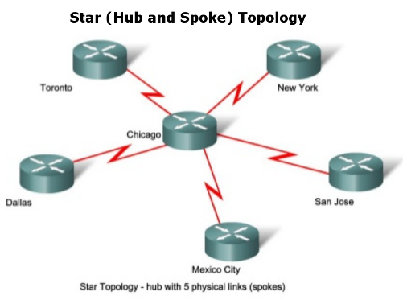
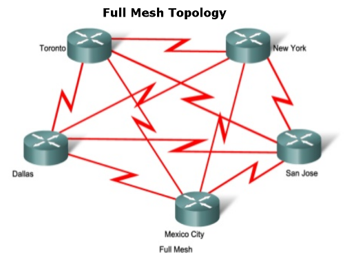
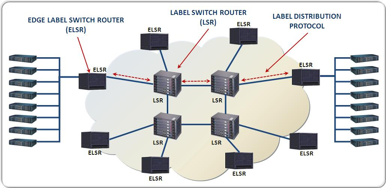
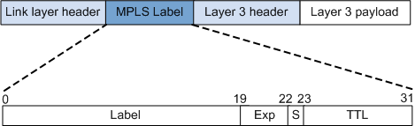
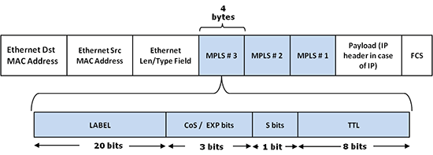
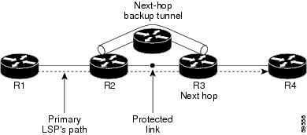
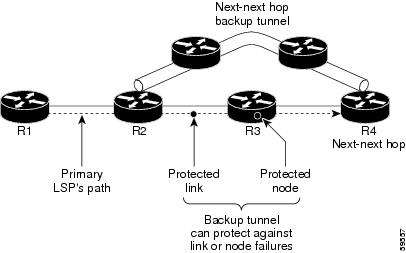

The Multiprotocol Label Switching (MPLS) protocol is currently the predominant technology that enables wide area networks (WANs) in large organizations and enterprises today. The MPLS protocol sits between OSI Layer 2 (data link layer) and Layer 3 (network layer), so it is sometimes referred to as "layer 2.5." It was designed to extend and replace previous technologies that have similar goals like Frame Relay and Asynchronous Transfer Mode (ATM). AT&T was by far the largest Frame Relay provider with an estimated customer base of $6 billion per year. This number has almost dropped to zero as customers have adopted newer and more cost effective MPLS networks.
- The primary benefit of MPLS is that it is not tied to any underlying layer 2 technology and is multi-protocol (the MP in MPLS). MPLS works with many data links including T1/E1, ATM, Frame Relay, DSL, cable, and 4G/LTE.
- MPLS provides support for traffic-engineering (TE). This gives the ability to manage capacity, priority, and prevent congestion on the network.
- Unlike Frame Relay, MPLS provides quality of service (QoS) management. QoS can be used to give applications that are latency and jitter sensitive higher priority. These applications typically include things like voice-over-IP (VoIP), video-conferencing, multimedia, and desktop virtualization (such as Citrix). These applications are typically more tolerant of packet loss, where-as other applications such as web and database may benefit from service on a slower but more reliable link.
- MPLS provides a feature known as "Fast Reroute" (FRR). This improves network uptime and resiliency. Recovery times of less than 50ms ensure that VoIP calls carry on without interruption.
- MPLS improves scalability. In the past, enterprises typically used Frame Relay in a star (hub and spoke) topology to connect headquarters with branches.

As this Frame Relay network scaled, additional circuits were added to incorporate a mesh or partial mesh topology. This increases complexity and management exponentially.

MPLS improves upon the complexity by implementing a routed network; where all the core routers, called Label Switch Routers (LSRs) are owned and managed by the service provider.

In a traditional IP network, interior routers use a shortest path first (SPF) algorithm to determine the path with least cost. Each router makes a forwarding decision using the network header. The process is repeated at each hop along the route until the packet eventually reaches its final destination.
MPLS departs from this. Upon entering the network, packets are given a specific forwarding equivalence class (FEC).
The FEC categorizes packets based on similar characteristics such as origination, destination, and QoS traffic class. FECs are used to handle similar packets in the same manner and over the same path. This FEC establishes a pre-determined route through the network, called a Label Switching Path (LSP), also sometimes referred to as an MPLS Tunnel. An MPLS label is prepended to the packet as it enters the network based on the FEC by an Edge Label Switch Router (ELSR). The core LSRs use these labels to transport the packet until it exits at another ELSR. At this point the label is removed and the FEC is re-evaluated. This effectively pushes the "intelligence" of routing to the edge routers and decreases overhead of core routers.
A label is a four-byte identifier that is put on a particular packet and represents the FEC to which that packet is assigned. These labels are arranged in a stack data structure; so that additional labels can be pushed and popped as needed. Features such as virtual private networks (VPNs) are implemented by pushing additional labels into this stack. The labels are inserted between layer 2 and layer 3 headers.

On an IP network, this would look like:

The 32 bits in the label are arranged into fields as follows:
Label (20 bits): Label Value (Unstructured)
Exp/TC (3 bits): Originally labeled Experimental Use, it was renamed in 2009 to Traffic Class. A field for QoS priority and ECN (Explicit Congestion Notification).
S (1 bit): Bottom of Stack indicator
TTL (8 bits): Time to Live
MPLS networks can be protected from both link and node failures with redundant hardware. Link failures can be avoided by configuring what is called Next-Hop Backups.

Node failures are avoided by configuring what is called Next-Next-Hop Backups.

The next best path calculation happens before the failure actually occurs. The backup paths are pre-programmed into the router awaiting activation, which can happen in milliseconds following failure detection.
- MPLS is expensive and difficult for enterprises to provision. There can be as much as 100 times difference between cost of broadband Internet and MPLS bandwidth!
- MPLS networks may not be available around the globe or may not traverse between continents.
- The local loops between the data center and service provider are still susceptible to cable cuts and outages.
- As cloud computing becomes more prevalent it makes less sense to push data to an MPLS provider and then to the Internet cloud application. Traffic can instead be pushed directly onto the Internet.
Because of the high cost of MPLS, many enterprise customers are seeking the right balance between MPLS, software-defined WAN (SD-WAN), cloud applications, and broadband Internet solutions. SD-WAN, a relatively new technology, uses software as a virtual overlay to a company's current WAN connection (which is usually MPLS). SD-WAN can be more easily deployed with a software‐based solution on commercial off‐the‐shelf (COTS) hardware platforms. When organizations want to add bandwidth, they can put SD-WAN on top of MPLS with broadband Internet access. All of these technologies complement each other and provide the strong, secure, private network that is necessary in most industries.
What is Multiprotocol Label Switching (MPLS)? (n.d.). Retrieved July 13, 2018, from
https://www.sd-wan-experts.com/multiprotocol-label-switching-mpls/
Cisco. MPLS FAQ For Beginners. (2017, September 26). Retrieved July 14, 2018, from
https://www.cisco.com/c/en/us/support/docs/multiprotocol-label-switching-mpls/mpls/4649-mpls-faq-4649.html
Steenbergen, R. (n.d.). MPLS for Dummies. Retrieved from
https://www.nanog.org/meetings/nanog49/presentations/Sunday/mpls-nanog49.pdf
Multiprotocol Label Switching. (2018, July 12). Retrieved from
https://en.wikipedia.org/wiki/Multiprotocol_Label_Switching
Cisco. Catalyst 6500 Release 12.2SX Software Configuration Guide - Multiprotocol Label Switching (MPLS) [Cisco Catalyst 6500 Series Switches]. (2013, November 17). Retrieved July 14, 2018, from
https://www.cisco.com/c/en/us/td/docs/switches/lan/catalyst6500/ios/12-2SX/configuration/guide/book/pfc3mpls.html
Hopkins, H, (2001, February). Frame Relay + MPLS And how they fit together. Retrieved from
http://www.webtorials.com/main/resource/papers/frforum/paper7/fr-mpls.pdf
F. (n.d.). MPLS Compared with Frame Relay and Internet VPN. Retrieved July 10, 2018, from
https://www.sd-wan-experts.com/mpls-compared-with-frame-relay-and-internet-vpn/
Gottlieb, A. (2016, August 12). SD-WAN takes advantage of the 100x MPLS/Internet price gap. Retrieved from
https://www.networkworld.com/article/3107210/lan-wan/sd-wan-takes-advantage-of-the-100x-mpls-internet-price-gap.html
CenturyLink. (n.d.). Choosing the Right MPLS SOLUTION How to Make the Best Choice for Your Business. Retrieved from
https://www.centurylink.com/asset/business/medium-business/documents/centurylink-howto-mpls-264920-jan2018-vf.pdf